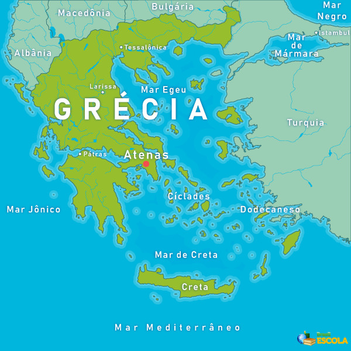
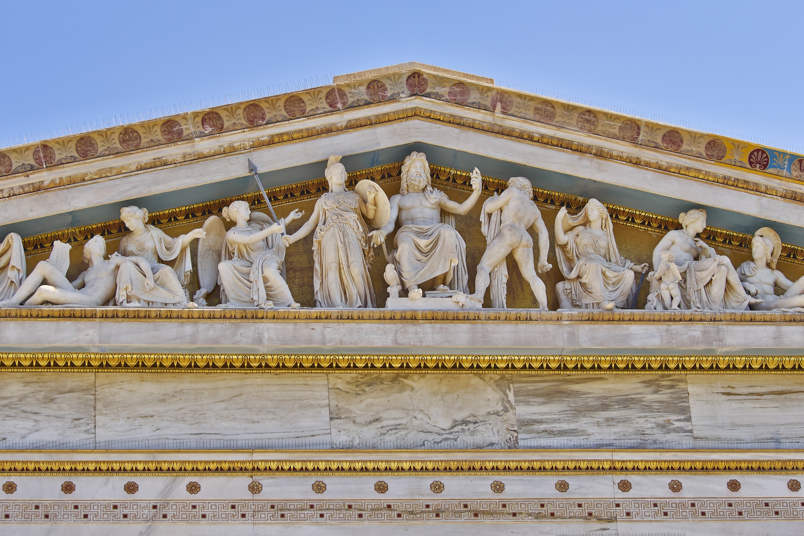
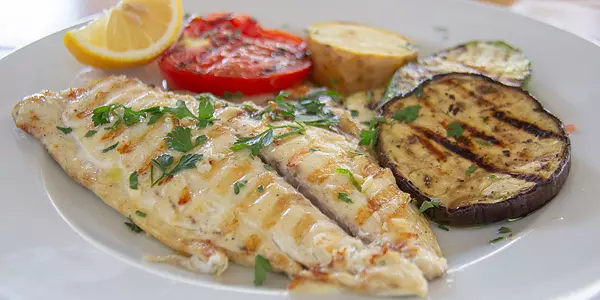
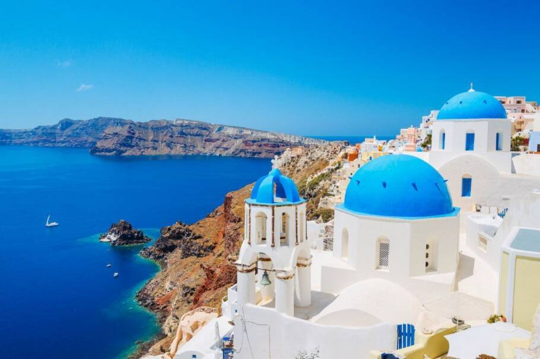

Uma Jornada pela Grécia Antiga e Moderna
Bem-vindo ao seu portfólio acadêmico sobre a Grécia, um país com uma história milenar e uma cultura vibrante. Explore conosco a localização geográfica, a rica tapeçaria religiosa, a deliciosa gastronomia e informações gerais que tornam a Grécia um lugar fascinante.
Localização da Grécia
A Grécia é um país europeu localizado no sul do continente, na porção mais meridional da península dos Bálcãs. É estrategicamente situada no cruzamento entre a Europa, a Ásia, o Oriente Médio e a África. Suas fronteiras terrestres são com a Albânia a noroeste, Macedônia e Bulgária ao norte, e Turquia a nordeste. É banhada pelos mares Jônico, Egeu e Mediterrâneo, possuindo uma extensa costa com milhares de ilhas.
Religião na Grécia
Atualmente, a religião dominante na Grécia é a Igreja Ortodoxa Grega, que é a religião oficial do país e representa a fé da maioria da população. No entanto, a Grécia é historicamente conhecida por sua rica mitologia e religião na Antiguidade. Os antigos gregos eram politeístas, acreditando em uma vasta gama de deuses e deusas que habitavam o Monte Olimpo, como Zeus, Hera, Poseidon, Atena, Apolo, entre outros. Essa religião antiga, com seus ritos, templos e mitos, teve uma profunda influência na cultura e na arte grega.
Gastronomia da Grécia
A gastronomia grega é um dos pilares da dieta mediterrânea, reconhecida por sua combinação de sabores frescos, ingredientes saudáveis e técnicas culinárias milenares. Ela prioriza o consumo de alimentos naturais como legumes, verduras, cereais, frutos do mar, oleaginosas e, principalmente, muito azeite de oliva. Alguns dos pratos típicos mais famosos incluem:
- Salada Grega (Horiatiki): Uma salada refrescante com tomate, pepino, cebola roxa, azeitonas Kalamata, queijo feta e azeite de oliva.
- Tzatziki: Um molho cremoso feito com iogurte grego, pepino ralado, alho e azeite de oliva, servido como acompanhamento.
- Moussaka: Uma espécie de lasanha grega, com camadas de berinjela, carne moída temperada e um molho bechamel cremoso.
- Souvlaki: Espetinhos de carne (geralmente porco ou frango) grelhados, servidos no pão pita com tzatziki e vegetais.
- Gyros: Carne (porco, frango ou cordeiro) assada em um espeto vertical, fatiada e servida no pão pita com molho e vegetais.
- Dolmades: Folhas de uva recheadas com arroz e ervas, cozidas lentamente.
A culinária grega é considerada Patrimônio Imaterial da Humanidade pela UNESCO, refletindo sua importância cultural e histórica.
Informações Gerais sobre a Grécia
Nome Oficial: República Helênica
Capital: Atenas
Localização: Sul da Europa, na Península Balcânica
Área: Aproximadamente 131.957 km²
População: Cerca de 10,4 milhões (estimativa 2023)
Língua Oficial: Grego
Moeda: Euro (€)
Clima: Mediterrâneo, com verões quentes e secos e invernos amenos e úmidos.
A Grécia é considerada o berço da civilização ocidental, com uma rica história que remonta à Antiguidade. Foi o local de nascimento da democracia, da filosofia ocidental, dos Jogos Olímpicos, da literatura ocidental e de importantes princípios da matemática e da ciência. O país possui uma extensa costa com milhares de ilhas, sendo um destino turístico popular devido às suas praias, sítios arqueológicos e paisagens deslumbrantes.
